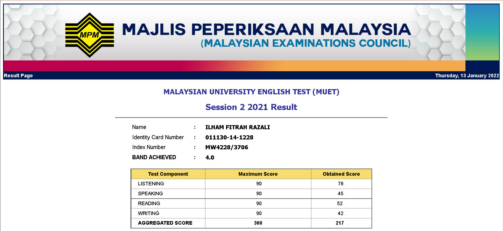

I am a diploma student of Information Management at Universiti Teknologi MARA (UiTM) Rembau. I started my university
journey on 2018, and most probably will end diploma on 2022 which is this year. The first semester of diploma was very fun
because I get to spend time with my classmates and close friends around the college. The memories that we had were very special
and hard to forget. Then, pandemic started when we were in second semester, that is where all of the nightmares of not
meeting them. It is very sad as I can only met them for a while. During pandemic, we spend our times studying at home and
quarantine ourself for our own safety. Despite of that, I really hope that we can have our graduation day physically,
so that we can meet each other again and spend our time for the last time before moving forward to our own life.
Besides that, I would love to share my results starting from semester 2 until semester 4 as a memories in my diploma life.
Also, I am gladly wanted to share my MUET results for the continuation of my degree.


